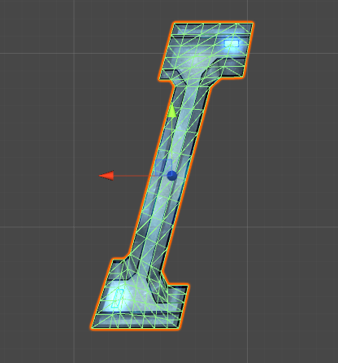
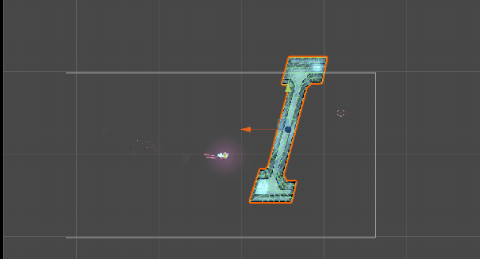
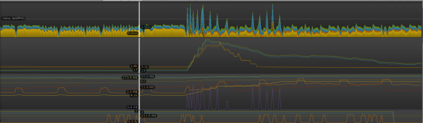
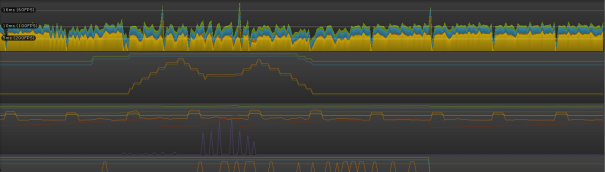

In Dawn of the Celestialpod, there is a lot of mesh destruction. Mesh destruction was actually the first thing implemented in the game besides movement. This means there was a ton of time for iteration and optimization. Originally, all of the mesh destruction was done on the CPU. This was incredibly expensive and was exponentially slower as a mesh becomes higher poly. You can view the old implementation here: Old Wall Shattering
Due to the amount of code in this system, this will not be a tutorial but rather an explanation of the architecture of this mesh shattering system I have created. I will also talk about things I had wish I had done. The link to the scripts for new shattering can be found here: Github Repository
There are a few scripts that make this system work along with one shader that the breakable mesh’s material will use. Let’s start with an easy one, the wall collider. This script manages all of the shapes in the polygon2D collider that each breakable mesh will use along with the original generation of such collider. Each wall will have its own copy of this script.
Next, there is the wall shatter script. Each individual wall will also contain one of these scripts. The wall shatter script will track explosions that are added to it when a bomb collides with it. An explosion is made up of a few things, a position, a radius, and a time. The position is simply the center of the explosion. The radius determines how big the explosion is. The time is used to simulate the triangles over time using first order physics interpolation.
There are a few functions that will come into play here, AddNewExplosion, CheckForRemovals, and the setup functions. AddNewExplosion will find space in the explosion array and reset the explosions data. CheckForRemovals will iterate through the explosions times checking if any should be removed, sorting the list so all of the free spaces are at the end of the array. The setup functions do several things.
First, it will setup the mesh so there are no triangles that share vertices. It takes that mesh and builds the collider matching each triangle on the mesh. Both of these tasks are done in editor rather than in play mode. When the game starts, this script will setup all of the necessary compute buffers that will be updated and sent to the shader each frame. Update will iterate through each of these explosions, add delta time to each explosion time, and send it to the shader. An example of how it is structured can easily be seen in the CheckForRemovals function.
private void checkForRemovals()
{
if (mCurrentExplosions <= 0)
return;
//Remove old explosions
int decrementAmount = 0;
for (int i = 0; i < mCurrentExplosions; i++)
{
if (explosionTimes[i] > removalTime)
{
explosionTimes[i] = -1.0f;
decrementAmount++;
Camera.main.GetComponent().RemoveExplosion();
}
}
//if any explosions have timed out
if (decrementAmount > 0)
{
//store in temporary to prevent multiple sort calls
Explosion[] explosions = new Explosion[mExplosionMax];
for (int i = 0; i < mExplosionMax; i++)
{
explosions[i].pos = explosionPositions[i];
explosions[i].radii = explosionRadii[i];
explosions[i].time = explosionTimes[i];
}
//sort based on times
Array.Sort(explosionTimes, explosions);
Array.Reverse(explosions);
//store back in arrays
for (int i = 0; i < mExplosionMax; i++)
{
explosionPositions[i] = explosions[i].pos;
explosionRadii[i] = explosions[i].radii;
explosionTimes[i] = explosions[i].time;
}
//set compute buffers
mExplosionTimes.SetData(explosionTimes);
mExplosionRadii.SetData(explosionRadii);
mExplosionLocations.SetData(explosionPositions);
}
mCurrentExplosions -= decrementAmount;
}
The wall manager is probably the trickiest of the scripts. There will only be one in each scene and it will be attached to the camera object. The wall manager will have a reference to every wall in the game. It will also track four appendstructuredbuffers(compute buffers that you can write to inside shaders and treat like a list). There are two objectIndex buffers(tracks the object index that was written to from the shader) and actual index buffers(the index of the specified triangle in question.
This is how I am able to determine which collider shapes in the polygon collider need to be removed along with which triangles should be removed. When something needs to be removed(either collider or rendered triangle), you will find it in the corresponding buffer. Each object will match the triangle/collider index in the buffer lists.
Why don’t I just have each individual wall have its own appendstructuredbuffers tracking what needs to be removed? Unfortunately, read-write buffers aren’t that easy. When using a read-write buffer, you need to attach it to a GPU register(Which there are only so many of). Let’s say you have 3 walls. In order, they set register 0 to their unique compute buffer. Since wall 3 had set it last, the only buffer attached to the register is wall 3’s. This means all of the walls will be writing to wall 3’s buffer!
The solution was what I had explained earlier. Have 4 different buffers that all walls can write to in their corresponding shaders. When they write a triangle index, they will also write their unique object index(assigned when the level starts). This means I can track which triangles are being shattered/removed in the shader! That means I won’t have to iterate through every single triangle in the mesh when I want to shatter it.
The wall manager can handle getting the count of the lists using argumentbuffers so it doesn’t have to grab the entire list from the GPU every frame.
//setting registers CPU side
Graphics.SetRandomWriteTarget(1, mTriangleRemovalsObjects, true);
Graphics.SetRandomWriteTarget(2, mColRemovalsObjects, true);
Graphics.SetRandomWriteTarget(3, mTriangleRemovalsIndices, true);
Graphics.SetRandomWriteTarget(4, mColRemovalsIndices, true);
//when rendering is done, clear targets
Graphics.ClearRandomWriteTargets();
//attaching to register inside shader
AppendStructuredBuffer triangleRemovalsObj : register(u1);
AppendStructuredBuffer colliderRemovalsObj : register(u2);
AppendStructuredBuffer triangleRemovalsIndices : register(u3);
AppendStructuredBuffer colliderRemovalsIndices : register(u4);
Finally, the shader. The shader takes all the explosion data and moves the vertex positions around in the geometry shader based on what is happening in game. The way it works is it loops through the explosions checking if any of the vertices in the triangle of close enough. If there are more than one explosion that is close enough, it will only add the explosion that has been around longest(this one hit the triangle first). From there it will move and rotate the triangle using first order physics simulation taking into account how close the triangle was to the explosion center(so triangles that were near the center of the explosion move faster) along with some randomness in the movement.
If the explosion that affects a triangle has a lifetime of 0, that means the collider corresponding to the triangle needs to be removed. Simply append the object ID and triangle index to the corresponding buffers so the wall manager can handle it. Similarly, if the the explosion time is greater than the removal time, it will append to the triangle removal buffers for the wall manager to handle.
That’s all! At runtime, calling the AddNewExplosion function will have everything work perfectly assuming everything is setup properly. However, for the ending level giant ship explosion where I shatter the entire scene this was still too time intensive. I created a separate shader that did the same thing in theory with a few differences.
This looks almost exactly like it did before(minus the fact that the gif is lagging) but it is much more optimized. Here are images from the profiler:
 The top is before this optimization and the bottom is with the optimization. The spikes in the optimized version are almost non-existent now as I have fixed a garbage collection issue that was previously there.
The first major difference is that it has no wall manager and never writes to compute buffers inside the shader. Next, it uses a tessellation shader. For this to make sense, let me explain how the ship exploding works. When the level ends, there will be a cinematic explosion like such:

There are many different things happening before the explosion even happens. First, a camera renders the entire scene and sets a quad’s texture to what was rendered. This will match up to be pixel perfect so you don’t notice the switch. Everything that is not important to the explosion cinematic is then set to inactive. What’s left is the squid and a quad with the scene rendered on it. Using the old shader would be boring as there would just be two giant triangles shattering.
Though the shader receives these two giant triangles, it does more on the GPU side. It generates thousands on the GPU and each of those are simulated in their own geometry shader(similarly to the shader discussed previously). The reason this is faster is because the CPU only has to worry about tracking so many vertices and indices. It’s must faster to send two triangles to the GPU than ten thousand every frame. I will only be attaching the shader for the ship explode system as the script that handles it is very similar to the wall shatter script.
I wish I could have used a tessellation shader in the mesh shattering process(The ones that track colliders). Before having implemented the system, I didn’t think it was possible to track vertices generated through tessellation. This forced each mesh to have to be relatively high poly so they shatter nicely. I did some research after the system was complete and found that I could track these ID’s using the barycentric coordinates.
Another thing I wish I could have done was avoid using so many conditional statements. and loops in the shaders. Conditionals and loops can be a bad idea on the GPU but I felt like this was a good trade-off to how I was originally doing things on the CPU.
Stay tuned as I may end up implementing this with more time for optimization! If you have any questions please don’t hesitate to ask!
Thanks for reading! Connect with us on Twitter, Facebook, or YouTube. To make sure you stay up to date, sign up for our email list!